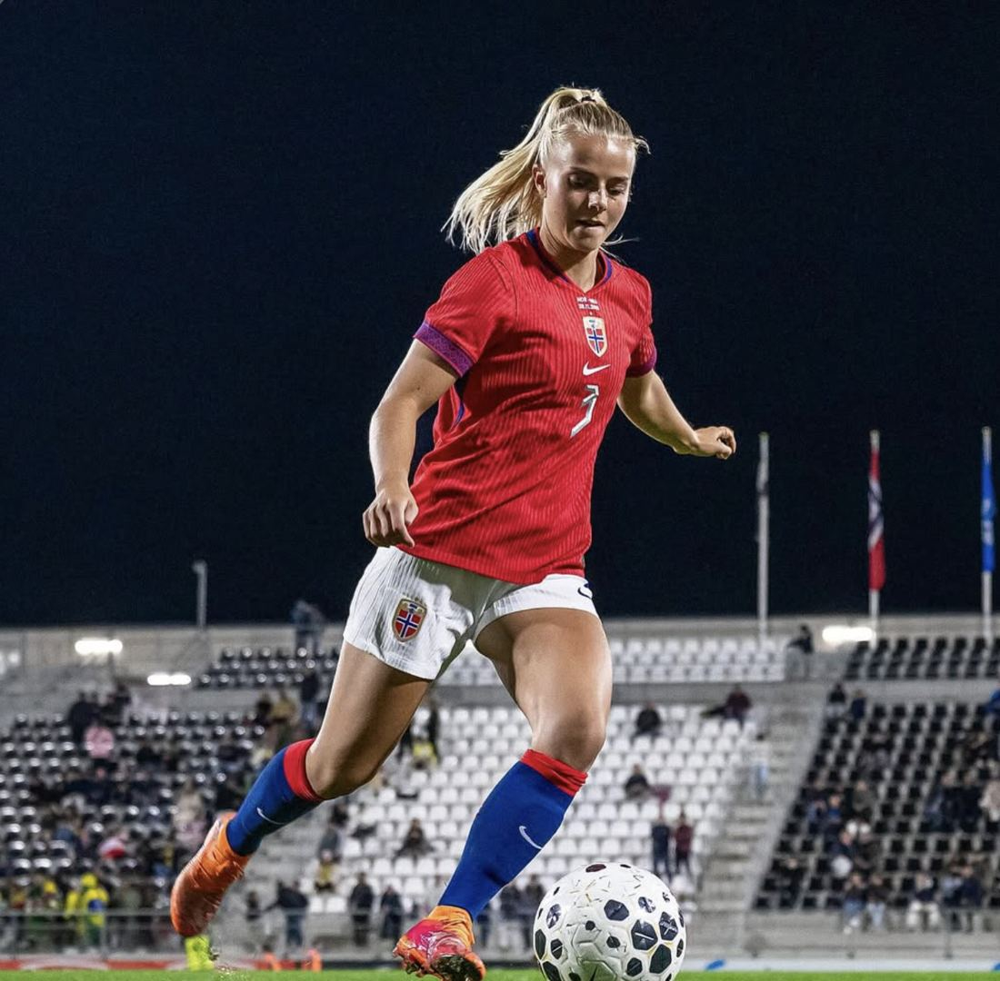
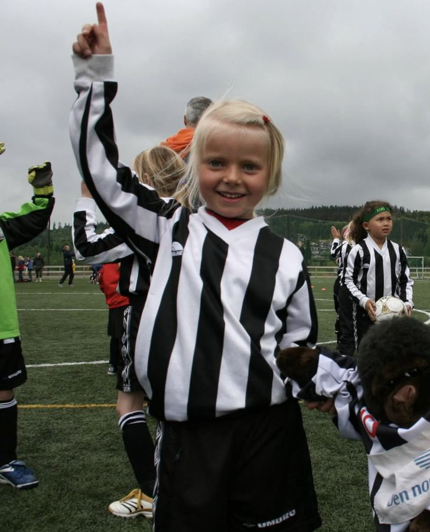
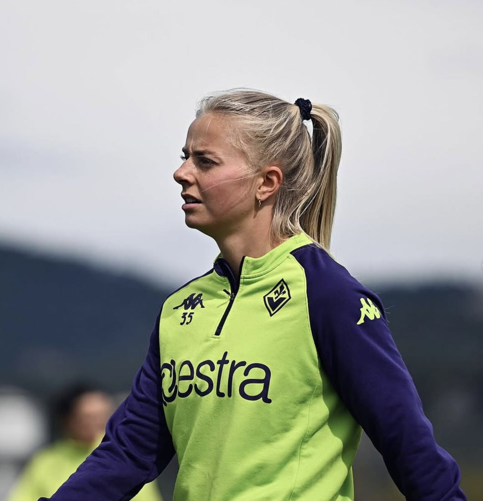
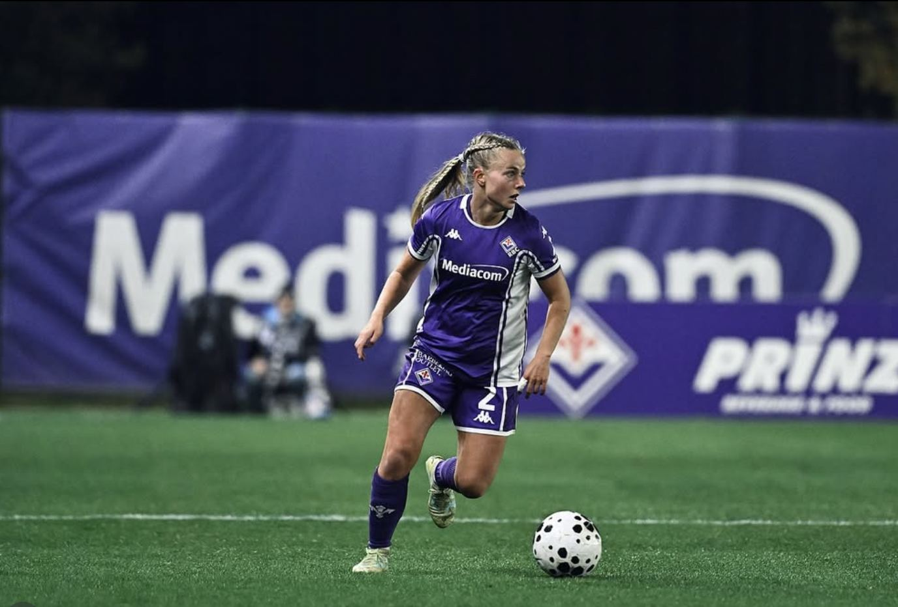

ACF Fiorentina Nå
Serie A Femminile. Hentet til Firenze i august 2025, spiller med nummer 2.
8Kamper
1Mål
Fra Kløfta til Firenze. Tre seriegull med LSK Kvinner, kaptein i Toppserien, og nå i Serie A for Fiorentina.


Emilie startet med fotball på Kløfta og gikk videre til akademiet i LSK Kvinner i 2015. To år senere fikk hun A-lagsdebuten mot Klepp, og hun ble værende på Lillestrøm i åtte sesonger. Der vant hun tre seriegull på rad, ble kåret til årets lag i Toppserien to ganger, og bar kapteinsbindet fra 2022.
I januar 2025 tok hun steget ut i Europa med svenske FC Rosengård, før Fiorentina hentet henne til Italia samme høst. Hun er en offensiv back som bidrar framover, og har vært en del av A-landslaget siden debuten i 2020. Sommeren 2025 spilte hun to kamper for Norge i EM i Sveits.
Serie A Femminile. Hentet til Firenze i august 2025, spiller med nummer 2.
Damallsvenskan. Signerte for de regjerende svenske mesterne i januar 2025.
Toppserien. Debut 17. april 2017 i 7–1 mot Klepp, første mål mot Røa samme høst. Kaptein fra 2022. Totalt 189 kamper og 17 mål i alle turneringer.
Moderklubben på Romerike, før overgangen til LSK-akademiet i 2015.

Fra kunstgresset på Kløfta til Serie A
Hverdagen er nå på Fiorentinas treningsanlegg i Toscana, med Kløfta, Lillestrøm og Malmö i bagasjen.
A-debut 7. mars 2020 mot Tyskland i Algarve Cup. Spilte to kamper i EM 2025, etter å ha spilt for Norge på alle aldersnivåer fra J15 og oppover.

Første sesong i Serie A Femminile, i en av Italias mest tradisjonsrike klubber. Bidrar både bakover og med målgivende pasninger framover.
Hun er den mest profesjonelle spilleren jeg har trent, uansett kjønn
Emilie hylles av treneren sin etter jubileumskampen for LSK Kvinner.
Les saken ↗Fiorentina bekrefter overgangen fra FC Rosengård, rett etter to kamper for Norge i EM.
Etter et halvt år i Malmö går turen videre til Firenze, selv om Rosengård ønsket å beholde henne.
Kapteinen forlater LSK Kvinner etter ti år i klubben.
Om hvordan hun fikk toppfotball og en full jobb ved siden av til å gå opp.